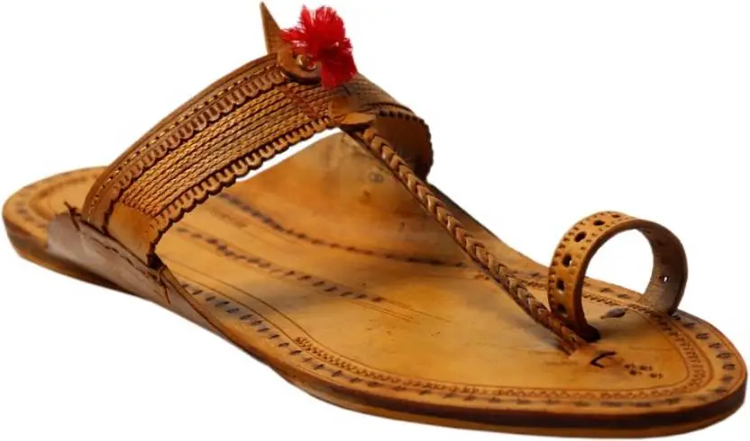

📖 Origin & Tradition
Kolhapuri Chappals are handcrafted leather sandals that originated in Kolhapur, Maharashtra.
These iconic footwear pieces date back to the 13th century and were traditionally made for everyday wear by local communities.
Known for their durability, earthy tones, and comfort, Kolhapuris became a fashion statement across India and later, the world.
💡 Did You Know?
👣 Kolhapuris are 100% handmade using vegetable-tanned leather.
🌿 The tanning process uses natural ingredients like myrobalan, babul bark, and seeds.
💼 Once used as daily wear, they are now featured in global fashion shows.
🌍 In the 1970s, Kolhapuris became trendy in the West, especially during the hippie movement.
🎨 Popular Styles
Pukari Style – Open-toe sandals with intricate weaving.
Kachkadi – Made from one piece of leather, simple yet sturdy.
Bakkalnali – Decorated with punched floral motifs.
Modern Kolhapuris – Color-dyed versions for contemporary fashion.
🎯 Quick Quiz:
Kolhapuri Chappals are made from which material?